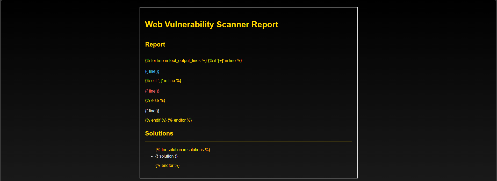
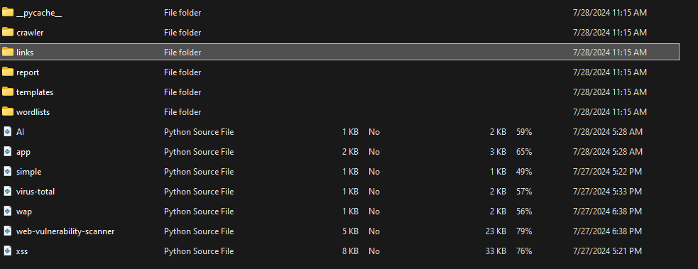
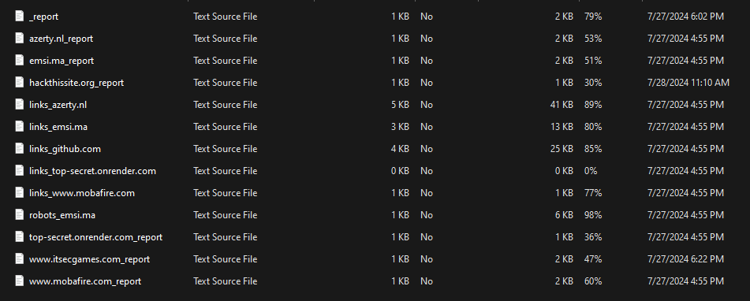

WebTechAnalyzer
This site takes input from a textfield in our html file from a browser. It uses custom python scripts to crawl the target site and scan for vulnerabilities and malicious elements.
 It then outputs the result as above and stores the report in a txt file in reports folder